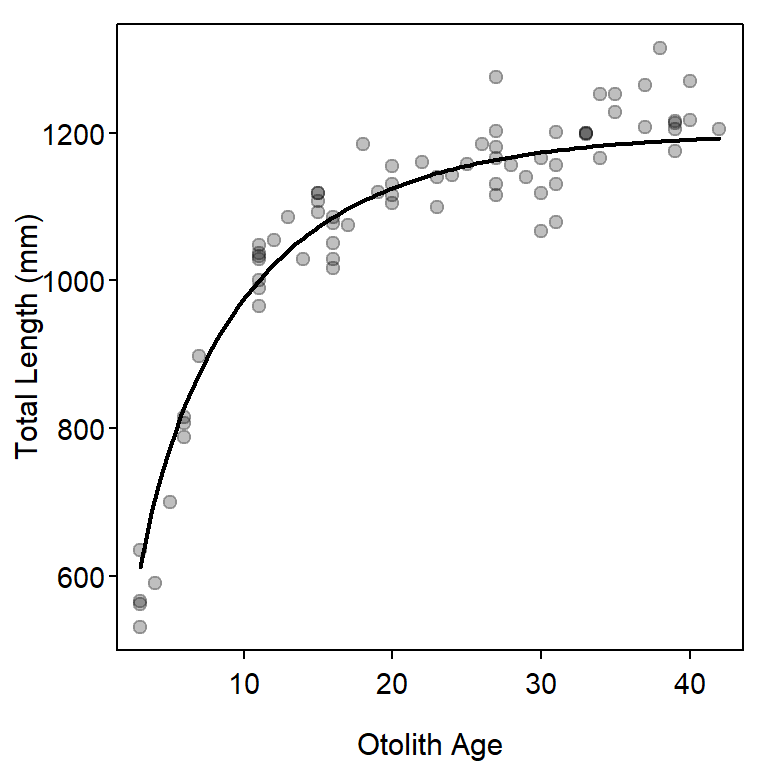
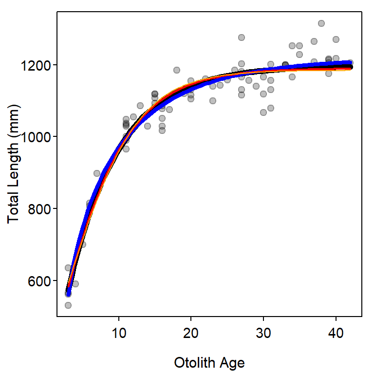

library(FSA) # for vbFuns(), logisticFuns(), GompertzFuns(), RichardsFuns()
library(dplyr) # for select(), filter()
library(nlstools) # for nlsBoot()Other Growth Functions
Mean length-at-age has been modeled by functions other than the von Bertalanffy Growth Function (VBGF) that was introduced in Chapter 12 of Ogle (2016). Other common functions are the exponential, logistic, and polynomial (Ricker 1975), as well as the specific functions of Gompertz (1825), Richards (1959), and Schnute (1981). Several of these functions are used in this supplement to demonstrate how to fit growth functions other than the VBGF.
Setup
Packages
Functions used in this supplement require the following packages.
Also note that one function from AICcmodavg is used below with :: so that the whole package does not have to be loaded.
Data
The male Black Drum data.1 used in Ogle (2016) are also used in this supplement. As in Ogle (2016) a few unneeded variables are removed for simplicity, only males are examined, and a single old fish is removed by including only fish with an otolith age less than 50.
1 Download data with CSV link on the linked page.
bdm <- read.csv("https://raw.githubusercontent.com/fishR-Core-Team/FSAdata/main/data-raw/BlackDrum2001.csv") |>
select(-c(spname,day,weight)) |>
filter(sex=="male",otoage<50)
headtail(bdm)#R| year agid month tl sex otoage
#R| 1 2001 1 4 787.5 male 6
#R| 2 2001 2 5 700.0 male 5
#R| 3 2001 8 5 1140.0 male 23
#R| 72 2001 122 5 1175.0 male 39
#R| 73 2001 125 6 590.0 male 4
#R| 74 2001 127 6 530.0 male 3
Fitting Richards Function
The “Schnute” model and several parameterizations of the logistic, Gompertz, and Richards models have been coded in convenience functions in FSA. For example, the default parameterizations of the logistic, Gompertz, and Richards models are defined below.
l1 <- logisticFuns()
g1 <- GompertzFuns()
r1 <- RichardsFuns()Unfortunately, convenience functions for finding starting values for each of these functions do not exist. Starting values may be obtained by iteratively superimposing a curve of the function at chosen values for the parameters onto a scatterplot of the raw data. This process may take considerable trial-and-error to find parameter values that provide a curve in the “neighborhood” of the data.2 The code below demonstrates this process for the Richards function created above in r1().3
2 Starting values likely only need to provide a rough fit to the data, though I had considerable difficulty finding starting values for the Richards function with these data.
3 Note that the Richards function has four parameters – \(L_{\infty}\), \(k\), \(a\), and \(b\).
plot(tl~otoage,data=bdm,pch=19,col=rgb(0,0,0,1/4),
xlab="Otolith Age",ylab="Total Length (mm)")
svR1 <- list(Linf=1200,k=0.1,a=1.1,b=0.4)
curve(r1(x,unlist(svR1)),from=3,to=42,add=TRUE,lwd=2)
These models may be fit and summarized as illustrated in Ogle (2016) and demonstrated below for the Richards function.
fitR1 <- nls(tl~r1(otoage,Linf,k,a,b),data=bdm,start=svR1)
bootR1 <- nlsBoot(fitR1)
cbind(Ests=coef(fitR1),confint(bootR1))#R| Ests 95% LCI 95% UCI
#R| Linf 1.216988e+03 1.190032e+03 1248.8624847
#R| k 9.419416e-02 6.593375e-02 0.1451012
#R| a 1.155605e+00 7.244091e-01 1.2161057
#R| b 3.793336e-01 2.731837e-01 1.1202240predict(bootR1,r1,t=3)#R| t Median 95% LCI 95% UCI
#R| [1,] 3 560.8867 523.3757 604.3954
Comparing Growth Function Fits
Information criterion may be used to identify which of these models best fits the male Black Drum data. To demonstrate this, the von Bertalanffy (as fit in Ogle (2016)), Gompertz, and logistic functions are fit to the data first.4
4 Starting values for the VBGF came from Ogle (2016), those for the Gompertz and logistic followed (but is not shown) a process similar to that used for the Richards function.
# Typical VB
vbTyp <- vbFuns()
svTyp <- list(Linf=1193,K=0.13,t0=-2.0)
fitTyp <- nls(tl~vbTyp(otoage,Linf,K,t0),data=bdm,start=svTyp)
# Gompertz
svG1 <- list(Linf=1250,gi=0.15,ti=2)
fitG1 <- nls(tl~g1(otoage,Linf,gi,ti),data=bdm,start=svG1)
# Logistic
svL1 <- list(Linf=1250,gninf=0.15,ti=4)
fitL1 <- nls(tl~l1(otoage,Linf,gninf,ti),data=bdm,start=svL1)These objects are then submitted to AICctab to provide a summary table. From this, the Richards models is most supported followed by the VBGF. The logistic and Gompertz models had little support, likely because they force an inflection point in the model which is not apparent in these data.
AICcmodavg::aictab(list(fitTyp,fitL1,fitG1,fitR1),
c("VBGF","logistic","Gompertz","Richards"))#R|
#R| Model selection based on AICc:
#R|
#R| K AICc Delta_AICc AICcWt Cum.Wt LL
#R| Richards 5 779.60 0.00 0.63 0.63 -384.36
#R| VBGF 4 780.85 1.25 0.34 0.96 -386.14
#R| Gompertz 4 785.34 5.74 0.04 1.00 -388.38
#R| logistic 4 790.33 10.73 0.00 1.00 -390.88A plot of the best-fit model for each growth function (Figure 2) shows, however, that there is likely very little difference in predicted values among the four models.
plot(tl~otoage,data=bdm,pch=19,col=rgb(0,0,0,1/4),
xlab="Otolith Age",ylab="Total Length (mm)")
curve(vbTyp(x,coef(fitTyp)),from=3,to=42,add=TRUE,lwd=6)
curve(r1(x,coef(fitR1)),from=3,to=42,add=TRUE,lwd=4,col="blue")
curve(g1(x,coef(fitG1)),from=3,to=42,add=TRUE,lwd=2,col="red")
curve(l1(x,coef(fitL1)),from=3,to=42,add=TRUE,col="orange")
References
Gompertz, B. 1825. On the nature of the function expressive of the law of human mortality and on a new mode of determining the value of life contingencies. Philosophical Transactions of the Royal Society of London 115:515–585.
Ogle, D. H. 2016. Introductory Fisheries Analyses with R. CRC Press, Boca Raton, FL.
Richards, F. J. 1959. A flexible growth function for empirical use. Journal of Experimental Botany 10:290–300.
Ricker, W. E. 1975. Computation and Interpretation of Biological Statistics of Fish Populations. Bulletin of the Fisheries Research Board of Canada.
Schnute, J. 1981. A versatile growth model with statistically stable parameters. Canadian Journal of Fisheries and Aquatic Sciences 38:1128–1140.